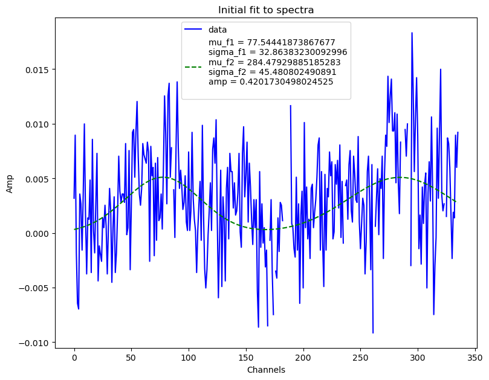

Extract & Re-Inject Pulse¶
Use burstfit to extract a pulse, then re-inject into the same file¶
[1]:
import tempfile
from typing import Union
from urllib.request import urlretrieve
import matplotlib.pyplot as plt
import numpy as np
from jess.dispersion import dedisperse
from jess.fitters import median_fitter
from scipy.stats import median_abs_deviation
from will import create, inject
from your import Your
[2]:
# !pip install git+https://github.com/thepetabyteproject/burstfit
# I had to make some changes to burstfit to get the plotting to work
from burstfit.data import BurstData
from burstfit.fit import BurstFit
from burstfit.io import BurstIO
from burstfit.model import Model, SgramModel
from burstfit.utils.functions import gauss_norm, gauss_norm2, pulse_fn_vec, sgram_fn_vec
from burstfit.utils.plotter import plot_me
[3]:
def show_dynamic(
dynamic_spectra: np.ndarray,
title: Union[str, None] = None,
save: Union[bool, None] = False,
) -> None:
"""
Show a dynamic spectra by first flattening it
in frequency. Do this by getting the medians of
each channel and then run a median filter along the
bandpass.
Then set the limits of the imshow so we get good detail
for the majority of the data.
Args:
dynmaic_spectra: the dynamic spectra to plot
title: Title of plot
save: Save the plot as `title` + `.png`
Returns:
None
"""
spectra_mads = median_fitter(np.median(dynamic_spectra, axis=0))
flat = dynamic_spectra - spectra_mads
std = median_abs_deviation(flat, axis=None)
med = np.median(flat)
plt.figure(figsize=(14, 7))
plt.imshow(flat.T, vmin=med - 3 * std, vmax=med + 6 * std, aspect="auto")
plt.xlabel("Time Sample #", size=20)
plt.ylabel("Channel #", size=20)
plt.colorbar()
plt.tight_layout()
if title is not None:
plt.title(title, size=28)
if save:
plt.savefig(title.replace(" ", "_") + ".png", dpi=75, bbox_inches="tight")
Extract the pulse using burstfit¶
This is copied from the burstfit documentation, https://github.com/thepetabyteproject/burstfit/blob/main/examples/BurstFit_custom_function.ipynb
[4]:
temp_dir = tempfile.TemporaryDirectory()
download_path = str(temp_dir.name) + "/FRB180417.fil"
url = "https://zenodo.org/record/3905426/files/FRB180417.fil"
urlretrieve(
url,
download_path,
)
fil_file = download_path
Make a simple channel mask¶
[5]:
yr_obj = Your(fil_file)
dynamic_spectra = yr_obj.get_data(0, yr_obj.your_header.nspectra)
stds = dynamic_spectra.std(axis=0)
stds -= np.median(stds)
np.abs(stds, out=stds)
stds /= median_abs_deviation(stds, scale="normal")
plt.plot(stds)
chan_mask = stds > 4
plt.plot(chan_mask)
[5]:
[<matplotlib.lines.Line2D at 0x7f59e0f11b50>]
[6]:
DM = 475.28400
bd = BurstData(
fp=fil_file,
dm=DM,
tcand=2.0288800,
width=2,
snr=16.8128,
)
[7]:
# We need the indices of the bad channels
bad_chans = np.arange(0, yr_obj.your_header.nchans)[chan_mask].tolist()
[8]:
bd.prepare_data(mask_chans=bad_chans)
plot_me(bd.sgram)
[9]:
pnames = ["S", "mu_t", "sigma_t", "tau"]
pulseModel = Model(pulse_fn_vec, param_names=pnames)
# For spectra, we will use a normalized gaussian model
snames = ["mu_f", "sigma_f"]
spectraModel = Model(gauss_norm, param_names=snames)
sgramModel = SgramModel(
pulseModel, spectraModel, sgram_fn_vec, mask=chan_mask, clip_fac=bd.clip_fac
)
snames = ["mu_f1", "sigma_f1", "mu_f2", "sigma_f2", "amp"]
spectraModel2 = Model(gauss_norm2, param_names=snames)
spectra_bounds = ([0, 0, 200, 0, 0], [100, 50, 300, 50, 1])
sgramModel2 = SgramModel(
pulseModel, spectraModel2, sgram_fn_vec, mask=bd.mask, clip_fac=bd.clip_fac
)
[10]:
bf = BurstFit(
sgram_model=sgramModel2,
sgram=bd.sgram,
width=bd.width,
dm=bd.dm,
foff=bd.foff,
fch1=bd.fch1,
tsamp=bd.tsamp,
clip_fac=bd.clip_fac,
mask=bd.mask,
)
[11]:
bf.validate()
bf.precalc()
[12]:
plot = True
bf.initial_profilefit(plot)

[13]:
bf.fitall(plot=True, spectra_bounds=spectra_bounds, profile_bounds=[])
WARNING:burstfit.fit:Input spectra bounds detected. Using them for component 1

/home/joseph/python/miniconda3/envs/kpe/lib/python3.9/site-packages/scipy/optimize/_minpack_py.py:1010: OptimizeWarning: Covariance of the parameters could not be estimated
warnings.warn('Covariance of the parameters could not be estimated',
WARNING:burstfit.curvefit:Fit errors are not finite. Retrying with p0+-(0.2*p0) bounds
Create the pulse¶
Use WILL with above model as the probability distribution function.
[14]:
pulse_obj = create.TwoDimensionalPulse(
bf.model.data.T, yr_obj.chan_freqs, tsamp=yr_obj.your_header.tsamp, dm=DM
)
# WILL has time on the vertical axis, burstfit on the horizontal, so transpose.
pulse = pulse_obj.sample_pulse(int(bf.model.data.sum()))
[15]:
show_dynamic(pulse, title=f"{DM} DM Pulse")
Inject the pulse¶
Original Dynamic Spectra
[16]:
show_dynamic(dynamic_spectra, title=f"Dynamic Spectra + {DM} dm Pulse")
The pulse is faintly visible before sample 2000.
[17]:
dynamic_spectra_w_pulse = inject.inject_constant_into_file(
yr_input=yr_obj,
pulse=pulse,
start=3000,
gulp=yr_obj.your_header.nspectra,
)
[18]:
show_dynamic(dynamic_spectra_w_pulse, title=f"Dynamic Spectra + {DM} dm Pulse")
It is difficult to see the new pulse, lets make it 100x brighter.¶
[19]:
pulse = pulse_obj.sample_pulse(int(100 * bf.model.data.sum()))
dynamic_spectra_w_pulse = inject.inject_constant_into_file(
yr_input=yr_obj,
pulse=pulse,
start=3000,
gulp=yr_obj.your_header.nspectra,
)
[20]:
show_dynamic(dynamic_spectra_w_pulse, title=f"Dynamic Spectra + Bright {DM} dm Pulse")
Now the re-injected pulse is visible between time samples 3000-3500.
[ ]: